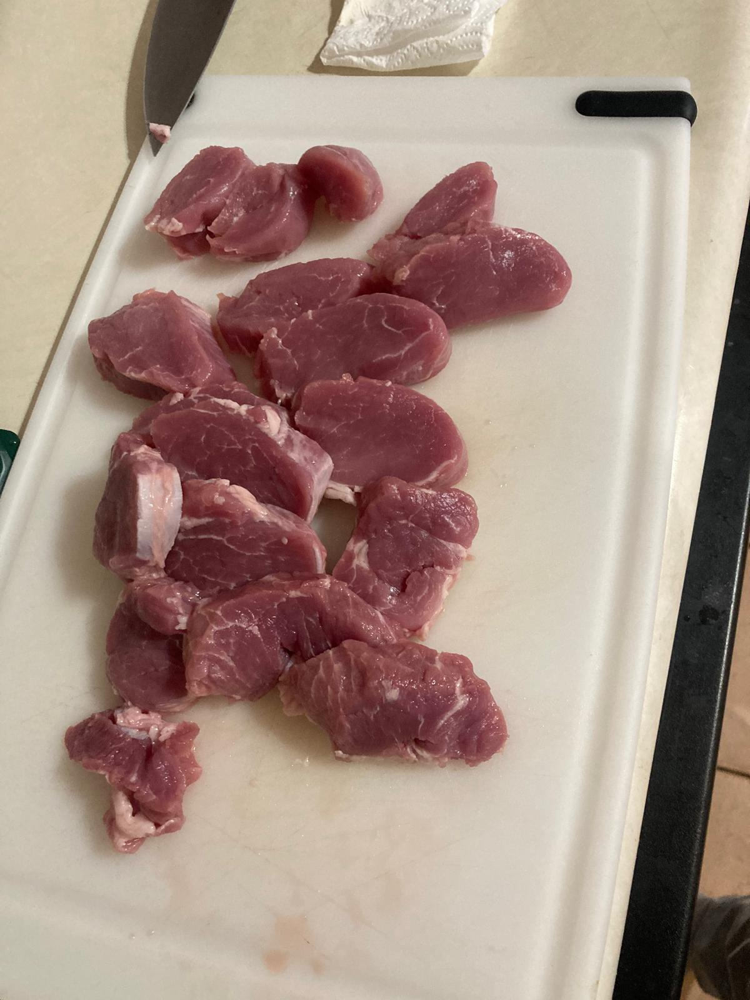
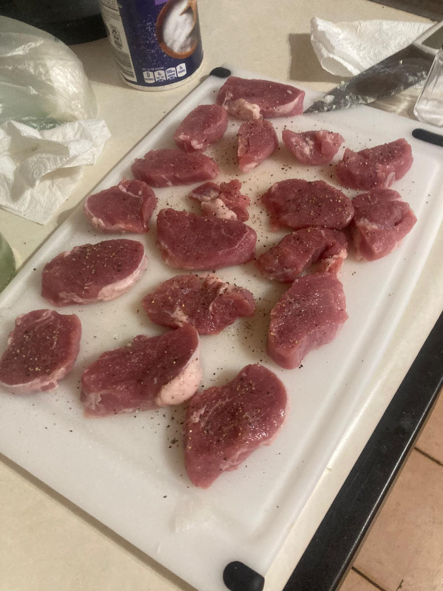

- Cortamos el solomillo en medallones, picamos la cebolla y cortamos el queso.
- Salpimentamos los medallones. Calentamos un poco de aceite de oliva en una sartén y doramos los medallones a fuego fuerte. Los guardamos en el horno para que no se enfríen.
- En otra cacerola, pochamos la cebolla picada y añadimos el vino. Subimos el fuego hasta que el vino se evapore.
- Añadimos la nata y cuando eche espuma incorporamos el roquefort hasta que se funda.
- Trituramos la salsa con la batidora de mano para que no queden tropezones. Mezclamos con el solomillo en una fuente y listo!
- A mí me gusta acompañarlo de arroz blanco o con pan para mojar la salsa.

